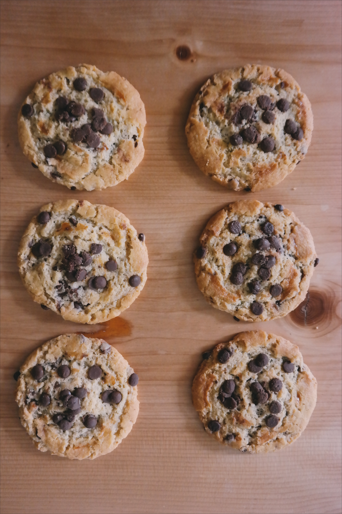

Scoop me a cookie
De vrais cookies américains avec Scoop me a Cookie

Présentation
Les cookies sont de petits gâteaux individuels américains très réputés pour la facilité de leur confection et leur recette inratable !
Les ingrédients
- 85 grammes de beurre
- 1 oeuf
- 85 grammes de sucre
- 1 sachet de sucre vanillé
- 150 grammes de farine
- 100 grammes de chocolat noir
- 1 cuillère à café de sel
- 1 cuillère à café de levure chimique
Les étapes
- Détailler le chocolat en pépites
- Préchauffer le four a 180 degrès. Dans un saladier mettre 75 grammes de beurre, le sucre, l'oeuf entier, la vanille et mélanger le tout.
- Ajouter petit à petit la farine, mélangée à la levure, le sel et le chocolat.
- Beurrer une plaque allant au four et former les cookies sur la plaque.
- Pour former les cookies, utiliser deux cuillères à soupe et faire des petits tas espacés les uns des autres, ils grandiront à la cuisson
- Enfourner pour 10 minutes de cuisson
Questionnaire
Votre Avis compte !
La recette en vidéo